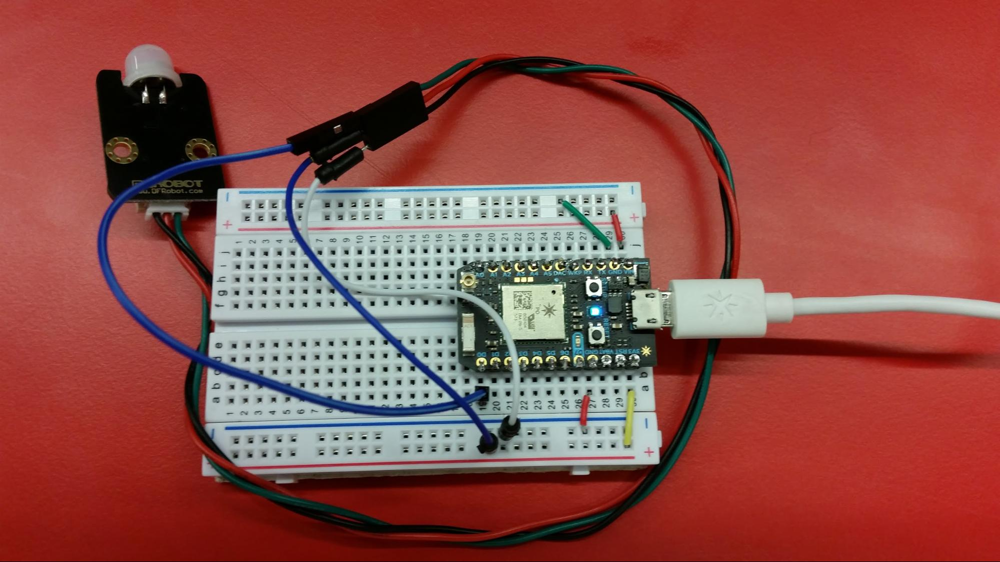
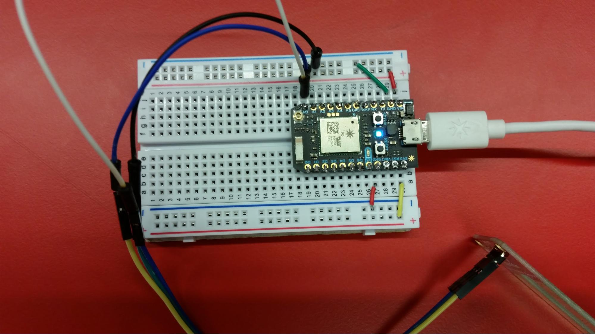

For this sensor, the aim is to give students some experience in wiring up a sensor without having to worry about coding it up. The important lessons from this activity will be learning how power flows through a breadboard and how breadboards work as well as connecting the device to the website.
As this is the first intended project, no previous experience with particle is necessary to get the project working.
Below are a list of parts necessary
As with all projects, you will also need a Particle Photon, Breadboard, micro-usb usb cable and working computer with usb slots.
The first task is to get the photon and the sensor connected together. To complete this, plug the jst side of the 3 wires into the pins of the PIR sensor. Once that is done, with the remaining 3 wires, connect them to the other side of the 3 wires plugged into the PIR sensor.
A quick explanation of the way a breadboard works. It is being powered by the particle photon put into it, which is how the power flows. Each pin is connected to a side of the breadboard that is powered independently of the other and the power flows strictly through those numbered rows. There are strips down the sides that have + and -, which denote positive and ground, these are exceptions to the numbered rows rule as, once connected to the breadboard, these flow all the way down the side.
Now, pay attention to the paths of the wires. Just above where the jst connects with the PIR sensor, Between those two metal rings there will be 3 characters, "D", "+" and "-". The wire aligned with "-" must lead to GND on the breadboard, the "+" must connect to 3V3 and “D” must connect to one of the D pins, or Digital pins, all of which can be found on the one side of the Particle Photon. Below will be a picture of the device to assist.
Once it is all wired up, plug in a micro-usb to usb cable between a computer and the Particle Photon to power it all up. The brilliance of the PIR sensor is that is does not need code to get working. Just set it up in a stable location and wave your hand in front of it.
Once that is done, go to the website and flash the code found on the next page which you can copy paste from this browser or from http://deco3801-lhc.uqcloud.net/schools/ into a text editor and save as a ".ino" file. Once that is all done, you can start watching the code get to the website from your very own wifi Photon.
// Here we declare which pins we are using for ease of use,
// if you want to change up any of the pins, change them here.
int pirpin = D0; // This is wired to the PIR sensor's out pin
void setup() {
Serial.begin(9600); // Setting up the serial for debugging.
pinMode(pirpin,INPUT); // The PIR pin is an input.
}
void loop() {
if (analogRead(D0) == HIGH) {
particle.publish("motion", "1";
}
delay(1000);
}
For this sensor, the aim is to give students some experience in coding a sensor and using the serial. The important lessons from this activity will be learning how coding a particle photon can be done to achieve different goals.
It is assumed that you have performed the activities listed for the PIR Sensor and have knowledge on A) wiring a sensor to a photon, B) How a breadboard works and C) How to upload code to the Particle Photon.
Below are a list of parts necessary
As with all projects, you will also need a Particle Photon, Breadboard, micro-usb usb cable and working computer with usb slots.
As with the previous activity, the first task will be connecting the sensor to the Particle Photon. For this activity, there will only be a brief overview of what needs to go where. If you need more information, please review the PIR Sensor activity which can be found at http://deco3801-lhc.uqcloud.net/schools/. Unlike the last task, this soil moisture sensor is an analog device, meaning we have to use one of the analog pins to read from it. So you will see, just above the pins on both sides of the sensor, VCC, GND and SIG. You can just plug this into the breadboard, making sure to abide by the numbered rows rule, and connect wires between VCC->3V3, GND->GND and SIG->any of the analog pins. Unlike the PIR sensor, this will not do anything on its own, so the most important part of these devices comes in, the coding. For this exercise, almost all of the code will be provided, some things will be omitted, however, to be filled in throughout this walkthrough. Which can be copied from http://deco3801-lhc.uqcloud.net/schools/. Whenever you are ready, head on over to http://deco3801-lhc.uqcloud.net/schools/ to set up the serial for your computer. With serial, you can debug code and send out messages to make sure everything you are getting is correct. Once it is all wired up and you have completed the code portion, plug in the Particle Photon as before and flash the code to the device. Then just insert the sensor into your container of dirt.

// #include brings in whatever extra code you need.
// Most, if not all, particle photon projects require application.h
#include "application.h"
// #define is common code practice to make the code more readable and understandable.
// Please replace "##" with the pin you have connect SIG to.
#define INPUT_PIN ##
// As you can see, we use "//" to denote a comment. These sections are ignored by the code.
#define WET_VOLTAGE 400
// WET and DRY voltages are just numbers that we use later, you can change them as you will.
#define DRY_VOLTAGE 250
// These are what are called functions. Functions are denoted by a return type, in this case
// void (Nothing is being returned), a name followed by () brackets, and finally, all of the
// code is wrapped up by these {} squiggly brackets.
void setup() { // In setup,
// In the exercise, we will be looking at using the serial, which is used for debugging
// these programs. This starts the serial up to be used.
Serial.begin(9600);
delay(500);
// It is useful to note that every piece of code in a function must end with a semicolon,
// this lets the program know that you are done with your instruction.
Serial.println("Ready...");
// Here is a serial print line, which prints a line to the serial saying whatever string you
// pass in. A string being a string of characters, which can be any letter, number or symbol.
// To let the computer know you are using a string, you wrap it in "" quotation marks.
}
// For every Particle Photon project, you need the setup() and loop() functions. loop() is the
// code that is looped over and over again, so this is where we put all the code.
void loop() {
// We are declaring a variable here. To do that, we say what type it is, here it is an integer,
// followed by the name of the variable, which can be any string without spaces. After the
// variable declaration, we assign it a value of the type we declared, here 0.
int sensorVoltage = 0;
sensorVoltage = analogRead(INPUT_PIN);
// After creating the variable, we can change its value whenever we want. So now we are turning
// it into whatever we are reading from INPUT_PIN, which you #defined at the start of the program.
// analogRead() comes from application.h, all it does is read the analog value of a pin.
// Notice that the variables are case-sensitive. sensor and Sensor are two different things.
// Here we print another thing to serial. You can concatenate string (piece them together)
// with "+"s. You can also add in variables that you have made. What is happening below is
// the integer sensorVoltage is being caste into a String. You can force one variable to
// become a different type by putting the other type in () brackets directly before it.
// The "\t" is just a code way of calling in a " " tab.
Serial.print("Voltage: " + (String)sensorVoltage + "\t");
// There are called if-else statements. You can ask the program questions, in this case,
// "is the voltage less than or equal to dry?". If they answer is true, the code within the
// {} squiggly brackets will be performed.
if (sensorVoltage <= DRY_VOLTAGE) {
// In each of these sections, we have omitted the message to print to serial and the
// value to publish to the Particle cloud. You can write whatever message you want,
// but make sure the string you print to Particle is "Dry", "Wet" or "Moist"
Serial.println("");
}
// If the answer is false, the program will look for an else, which is to say "If it was wrong,
// what should I do now?". Here, we have made an else if, so if one answer is false, we ask another
// question.
else if (sensorVoltage >= WET_VOLTAGE) {
Serial.println("");
}
// An else if will mean you have more control over what is being let through, for example:
// "If the dress is blue, do this, else if the dress is red, do this". But an else will just let
// every other response through, so "else, if the dress is any other colour".
else {
Serial.println("");
}
Particle.publish("moisture", "");
// Lastly, we have the delay, this is measured in milliseconds, so 1000 would translate to
// 1 second. As the Particle Photon cannot record more than one a second, please set the delay
// to anything you want above 1 second, or 1000 milliseconds.
delay(####);
}
For this sensor, the aim is to give students more experience with coding a sensor, allowing them to get a feeling for how it all works. The important lessons from this activity will be gaining more experience with coding a particle photon and learning some of the basic programming statements.
It is assumed that you have performed the activities listed for both the PIR Sensor and the Soil Moisture Sensor, and have knowledge on A) wiring a sensor to a photon, B) How a breadboard works, C) How to upload code to the Particle Photon and D) Some basics of coding.
Below are a list of parts necessary
As with all projects, you will also need a Particle Photon, Breadboard, micro-usb usb cable and working computer with usb slots.
As before, start with connecting the sensor to the Particle Photon as you did for the PIR sensor. The only special thing to note here is the pin labelled NC, or Not Connected. Just pretend this pin doesn't exist. This device is an analog device, so keep that in mind when you are wiring it up.
This time the code will be a bit harder. Instead of just filling in values, you will be asked to fill in if and else statements. The code can be copied from http://deco3801-lhc.uqcloud.net/schools/.
#include "application.h"
#define INPUT_PIN A0
#define high 1100
#define medium 550
#define low 300
// We will be removing our Serial.println(); statements
// from this code. Feel free to add your own in the methods
// below at will.
void setup() {
Serial.begin(9600);
// This device takes a lot of time to warm up.
Serial.println("Wait for Start...");
delay(30000);
Serial.println("Starting");
}
int total = 0;
int i = 0;
void loop() {
int voltage = analogRead(INPUT_PIN);
// Now for the ifs and elses. This is where the task will focus
// this time. There are variables here that have been defined and
// it is up to you to make ifs and elses to encapsulate them.
// HINT: Measure voltage against the defined values.
// HINT: You can chain statements together using and && and or ||.
// ex. if (foo>2 && foo<10) would only be true if both are true.
if () {
// very high pollution
Serial.print("");
//Particle.publish("airquality", "Very High Pollution");
} else if () {
// high pollution
Serial.print("");
//Particle.publish("airquality", "High Pollution");
} else if () {
// medium pollution
Serial.print("");
//Particle.publish("airquality", "Medium Pollution");
} else {
// low pollution
Serial.print("");
//Particle.publish("airquality", "Low Pollution");
}
Particle.publish("airquality", (String)(voltage/40));
Serial.print("\t voltage: " + (String)voltage);
Serial.println("\t average: " + (String)average);
delay(10000);
}
| Date | Data | Events | Photons |
|---|